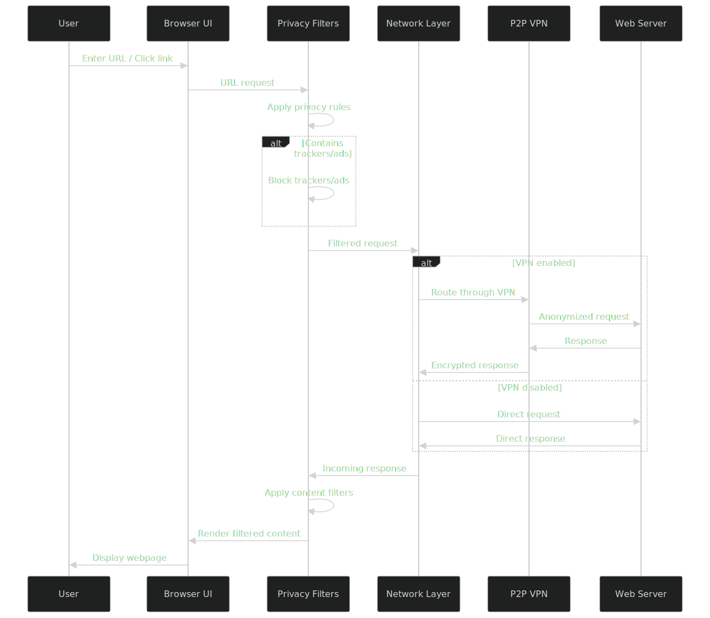
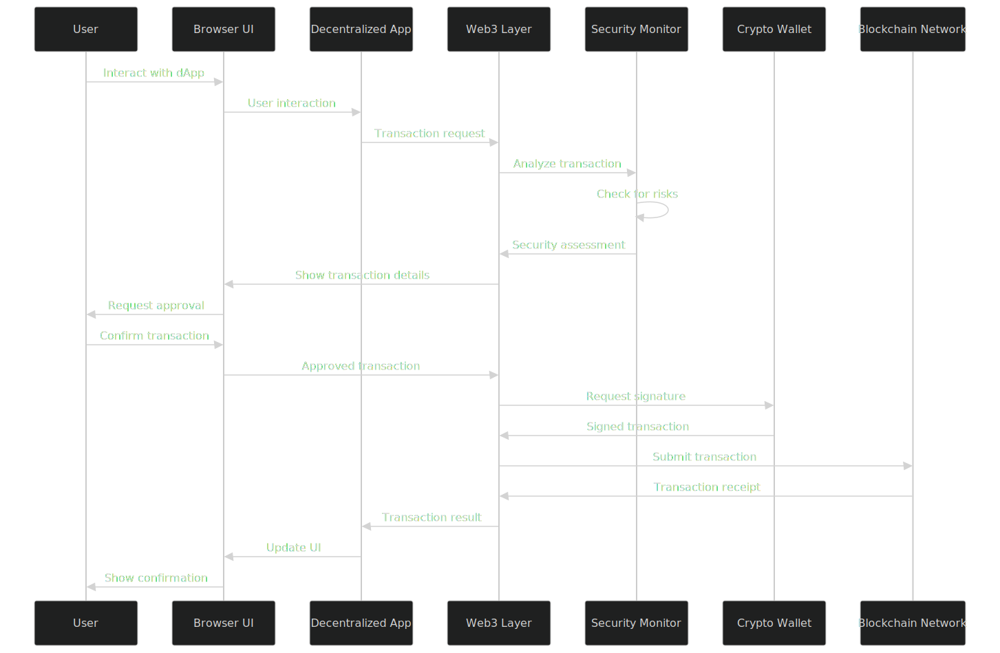
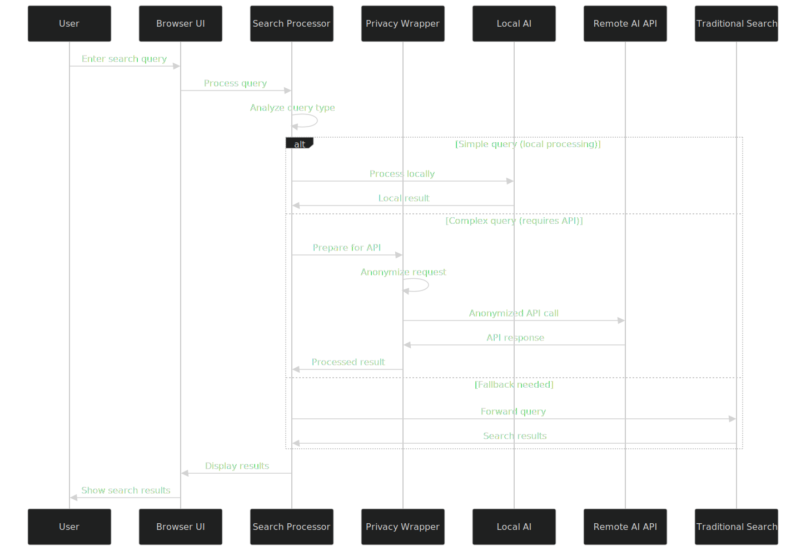

Data Flow & Security
This section provides an overview of how data flows through Macro Browser and the security measures in place to protect user privacy and security.
Data Flow Overview

Core Data Flows
1. Web Browsing Flow

2. Web3 Transaction Flow

3. Search Query Flow

Security Architecture
Macro Browser's security architecture follows a defense-in-depth approach with multiple layers of protection.
Security Layers

Key Security Features
Process Isolation and Sandboxing
Macro Browser uses a multi-process architecture with strict sandboxing:
- Process Types: Separate processes for browser UI, renderers, GPU, network, and utility functions
- Privilege Separation: Each process has minimal required privileges
- Renderer Isolation: Web content runs in isolated renderer processes
- Site Isolation: Different sites run in different processes to prevent cross-site data leaks
- Sandbox Policies: Strict OS-level sandboxing restricts process capabilities
Network Security
Multiple layers of network security protect user data:
- TLS Validation: Strict validation of TLS certificates and connections
- HTTPS Enforcement: Automatic upgrading to HTTPS when available
- Certificate Transparency: Verification against CT logs
- HSTS Support: Respect for HTTP Strict Transport Security
- P2P VPN Encryption: Additional encryption layer when VPN is enabled
- DNS-over-HTTPS/TLS: Encrypted DNS resolution to prevent snooping
Content Security
Content security features protect against malicious web content:
- Content Security Policy: Enhanced CSP implementation
- XSS Protection: Built-in cross-site scripting protection
- Phishing Detection: Recognition of known phishing attempts
- Resource Integrity: Verification of subresource integrity
- Frame Sandboxing: Strict sandboxing of iframes
- Permission Model: Granular permission controls for web features
Web3 Security
Special security measures for blockchain interactions:
- Transaction Analysis: Pre-execution analysis of transaction effects
- Contract Verification: Verification of smart contract source code
- Address Validation: Checks against known scam addresses
- Permission Controls: Domain-specific permission for dApps
- Gas Monitoring: Prevention of excessive gas fees
- Signature Request Analysis: Clear explanation of signature requests
Data Privacy
Macro Browser's privacy architecture ensures user data is protected:
- No Persistent History: By default, no browsing history is saved
- Memory-Only Storage: Temporary data held in memory, not on disk
- Data Minimization: Only essential data is collected or processed
- Limited Data Sharing: Minimal data shared with external services
- Anonymized Queries: Search queries are anonymized before processing
- Session Isolation: Each browsing session is isolated
Authentication and Authorization
For features requiring authentication:
- Wallet Authentication: Secure wallet connection process
- Permission Model: Explicit user consent for sensitive operations
- Transaction Signing: Clear approval process for blockchain transactions
- API Authorization: Secure handling of API keys and tokens
- Local Authentication: Option for local authentication for sensitive settings
Threat Mitigation
Strategies to mitigate common threats:
| Threat | Mitigation Strategy |
|---|---|
| Man-in-the-Middle | TLS validation, certificate pinning, VPN encryption |
| Phishing | Visual security indicators, domain verification, warnings |
| Malware | Content filtering, script blocking, sandboxing |
| Cross-Site Scripting | CSP enforcement, input sanitization, output encoding |
| Tracking | Tracker blocking, fingerprinting protection, private browsing mode |
| Web3 Scams | Contract verification, phishing protection, transaction analysis |
| DNS Attacks | DNS-over-HTTPS, DNS caching, DNSSEC validation |
| Browser Exploits | Regular updates, process isolation, reduced attack surface |
Security Response Process
In case of security vulnerabilities:
- Discovery: Identification of potential security issue
- Assessment: Evaluation of impact and risk
- Resolution: Development of fix or mitigation
- Deployment: Rapid update distribution to users
- Disclosure: Responsible disclosure after patching
Regular Security Audits
Macro Browser undergoes regular security reviews:
- Code Audits: Regular review of source code for vulnerabilities
- Penetration Testing: Active testing for security weaknesses
- Dependency Scanning: Monitoring of third-party dependencies
- Cryptographic Review: Analysis of cryptographic implementations
- Privacy Assessment: Review of data handling practices